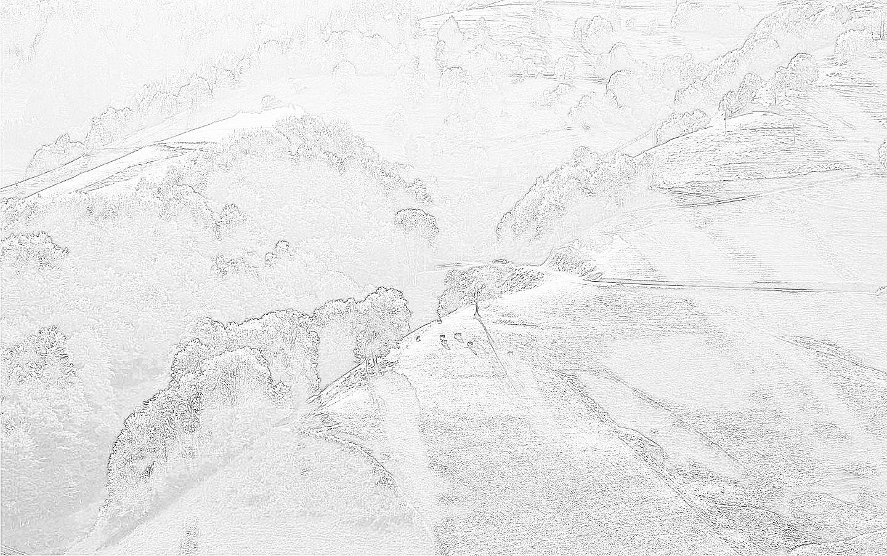

FRUŠKOJ GORI
Planinari slaninari i Staze zdravlja
Početna
Knjiga
Mesta
Staze
Zjale
Moja FG
Mobilna
Uvod
O Fruskoj gori
Prirodne lepote
Jezera
Potoci
Vodopadi
Slapovi i kaskade
Izvori i česme
Bunari
Najpoznatiji vrhovi
Vidikovci
Pećine
Perina pećina
link 1
link 2
Geološki lokaliteti
Jezera
Veštačka jezera i akumulacije
Prirodna jezera
Jezera u napuštenim površinskim kopovima
Jezera za kupanje
Manja jezera i bare
Ribnjaci
Živi svet Fruške gore
Oblasti
Šume
Livade
Pašnjaci
Parkovi i bašte
Biljni svet
Drveće
Cveće
Lekovito bilje
Polja sremuša
Neobična stabla
Gljive
Životinjski svet
Krupna divljač
Sitne životinje
Ptice
Insekti
Ostalo
Istorijska, duhovna i kulturna baština
Manastiri
Crkve
Kapele i isposnice
Energetski izvori
Utvrđenja i tvrđave
Ostaci starih crkava i manastira
Dvorci, letnjikovci, vile
Spomenici iz II svetskog rata
Arheološki ostaci
Usamljeni grobovi
Turizam
Informativni centar
Muzeji
Izletišta
Odmarališta
Dečija odmarališta
Sportsko-rekreativni centri
Bazeni, plaže, kupališta
Banje
Hoteli
Restorani
Čarde
Etno sela
Vinarije
Lovišta i uzgajališta
Ribnjaci
Pčelarstvo
Rasadnici
Poznati i značajni lokaliteti i izletišta
Partizanski put
Iriški Venac
Stražilovo
Brankovac
Zmajevac
Popovica
Glavica
Andrevlje
Osovlje
Letenka
Testera
Dolina kestenova
Ravne
Papratski Do
Rohalj baze
Ciganski logor
Čortanovačka šuma
Lipovača
Infrastruktura i stanovništvo
Putevi i saobraćajna mreža
Regionalni putevi
Lokalni putevi
Ostali putevi
Autobuski prevoz
Skele preko Dunava
Naselja
Naseljena mesta
Manja mesta i sela
Vikend naselja
Rudnici i kamenolomi
Aktivni kamenolomi
Napušteni kamenolomi
Aktivni boravak u prirodi
Planinarenje
Biciklizam
Jahanje
Penjanje po stenama
Dečija sankališta i skijališta
Planinarski domovi
Planinarske staze
Staza Fruškogorske transverzale
Staza Fruškogorskog maratona
Staza Bukovačkog maratona
Staza Šidskog novogodišnjeg maratona
Staza Transverzale Sremski front
Staza Evropskog pešačkog puta E7
Ostale markirane staze
Ostale nemarkirane staze
Manifestacije
Planinarske manifestacije
Fruškogorski maraton
Bukovački maraton
Šidski maraton
Noćni marš po Fruškoj gori
Gastronomske manifestacije
Zanimljivosti o Fruškoj gori
Slave manastira i naseljenih mesta
Poznate ličnosti vezane za Frušku goru
Mitovi i legende vezane za Frušku goru
Fruškoj gori - Planinari slaninari i Staze zdravlja